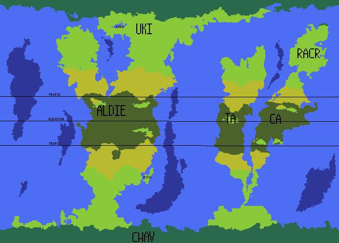

Dark green-temperate grassland, Light green-grassland, Yellow-desert, Forest green-tropical grassland, Light blue-shallow ocean, Dark blue-deep ocean
The Lacerticine is charictarised by a slightly warmer and more humid than Earth. These conditions were selected to start the lush planet of Physignathus as they are ideal for life. The Lacerticine is the ideal start for the newly developing ecosystem of Physignathus.
Physignathus at this time is made of six different continents which are all joined by land bridges so that you could walk from one pole to the other without ever seeing the ocean. And it is also extremely flat as much of Physignathus' life has been without water and thus no tectonics or even much erosion. This tectonic arrangement was chosen for the early ecosystem so flora and fauna can spread out naturaly.The only significant land which is not connected to the mainland is the medium sized island named Esca.
Physignathus has now started its hundreds of millions years journey and it is now finaly ready to explore.